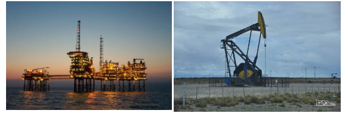

Capítulo 5
As Eras Geológicas e a Indústria Petrolífera
 CONTEXTUALIZANDOA indústria do petróleo e gás natural possui uma grande importância no cenário econômico mundial, sendo essencial para o desenvolvimento socioeconômico do nosso país. O petróleo é ainda considerado o principal combustível e é insumo para a produção de diversos produtos industriais, tais como borracha, solventes, fertilizantes, etc. O gás natural, por sua vez, é uma Disponível em: de energia limpa que está ganhando cada vez mais espaço como combustível, principalmente industrial.
Fonte: https://www.migalhas.com.br/depeso/68160/a-industria-de-petroleo-e-gas-e-a-propriedade-industrialComo o petróleo surgiu? De que maneira as eras geológicas explicam a evolução do planeta Terra?
(RE)CONSTRUINDO CONHECIMENTOSEstima-se que a formação do planeta Terra teve início há cerca de 4,5 bilhões de anos. Durante esse período, ocorreram diversos fenômenos que marcaram o desenvolvimento da Terra. Os estudiosos, para também facilitar a organização das pesquisas, separaram em fases os acontecimentos que marcaram o planeta, denominadas eras geológicas.
As diferentes eras geológicas correspondem a grandes intervalos de tempo, divididos em períodos, Arqueozoica, Proterozoica, Paleozoica, Mesozoica e Cenozoica.
ArqueozoicaA era geológica Arqueozoica é caracterizada pela formação da crosta terrestre, em que surgiram os escudos cristalinos e as rochas magmáticas, nos quais encontramos as mais antigas formações de relevo. Esse período teve início há aproximadamente, 4 bilhões de anos atrás.
ProterozoicaEstima-se que essa era geológica teve início há cerca de 2,5 bilhões de anos atrás e findou-se há 550 milhões de anos. Durante esse período ocorreu intensa atividade vulcânica, fato que promoveu o deslocamento do magma do interior da Terra para a superfície, originando os grandes depósitos de minerais metálicos, como, por exemplo, ferro, manganês, ouro, etc. Na era geológica do Proterozoico ocorreu grande acúmulo de oxigênio na atmosfera. Também ficou caracterizada pelo surgimento das primeiras formas de vida unicelulares avançadas.
PaleozoicaA era Paleozoica prevaleceu de 550 a 250 milhões de anos atrás. Nesse período a superfície terrestre passou por grandes transformações, entre eles estão o surgimento de conjuntos montanhosos como os Alpes Escandinavos (Europa). Essa era geológica também se caracteriza pela ocorrência de rochas sedimentares e metamórficas, formação de grandes florestas, glaciações, surgimento dos primeiros insetos e répteis.
MesozoicaA era Mesozoica iniciou-se há cerca de 250 milhões de anos atrás, ela ficou marcada pelo intenso vulcanismo e consequente derrame de lavas em várias partes do globo. Também ficou caracterizada pelo processo de sedimentação dos fundos marinhos, que originou grande parte das jazidas petrolíferas hoje conhecidas. Outras características dessa era geológica são: divisão do grande continente da Pangeia, surgimento de grandes répteis, como, por exemplo, o dinossauro, surgimento de animais mamíferos, desenvolvimento de flores nas plantas.
CenozoicaEssa era geológica está dividida em dois períodos: Terciário (aproximadamente 60 milhões de anos atrás) e Quaternário (1 milhão de anos atrás). - Terciário: Caracterizado pelo intenso movimento da crosta terrestre, fato que originou os dobramentos modernos, com as mais altas cadeias montanhosas da Terra, como os Andes (América do Sul), os Alpes (Europa) e o Himalaia (Ásia). Nessa era geológica surgiram aves, várias espécies de mamíferos, além de primatas. - Quaternário: Era geológica que teve início há cerca de 1 milhão de anos e perdura até os dias atuais. As principais ocorrências nesse período foram: grandes glaciações; atual formação dos continentes e oceanos; surgimento do homem.
Fonte: https://brasilescola.uol.com.br/geografia/eras-geologicas.htm Origem do petróleoO petróleo é originado a partir da decomposição de matéria orgânica, especialmente, dos plânctons. As bactérias em ambientes com baixo teor de oxigênio realizam a atividade de decomposição que acaba por se acumular em camadas do subsolo que se encontram em bacias sedimentares, no assoalho oceânico, no fundo dos mares ou de lagos e sob condições específicas de pressão. Ao longo dos anos, esses depósitos sofrem diversas modificações até se transformarem no que corresponde à substância oleosa, o petróleo. De acordo com a Agência Nacional do Petróleo, Gás Natural e Biocombustíveis (ANP), a composição química do petróleo, no que tange à proporção de seus componentes, seria, de forma geral (podendo variar dependendo da amostra):
Carbono: 82%
Hidrogênio: 12%
Nitrogênio: 4%
Oxigênio: 1%
Sais: 0,5%
Metais: 0,5%
Fonte: https://brasilescola.uol.com.br/geografia/petroleo.htm1) De acordo com o estudo acima responda:
a) Como o petróleo surgiu?
b) Em que era geológica apareceram as primeiras jazidas de petróleo?
c) Que produtos podem ser criados através do petróleo?
2) A idade aproximada da Terra é de aproximadamente 4,5 bilhões de anos. Em que era geológica surgiram os primatas?
3) Cite os elementos químicos que estão presentes no petróleo.
O QUE APRENDINo contexto da Indústria Petrolífera, vimos como surgiu o petróleo no Planeta, suas principais propriedades, bem como os produtos que podem ser originados a partir dele. Estudamos as diferentes eras geológicas e os principais eventos naturais que ocorreram em cada uma, identificando principalmente qual em qual deles teve origem as primeiras jazidas de petróleo.
1) a) Surgiu através da decomposição de matéria orgânica em bacias sedimentares
b) Na era Mezozoica há 250 milhões de anos.
c) Combustíveis, plástico, borracha, solventes, fertilizantes.
2) Na era Cenozoica no período Terciário
3)
Carbono: 82%
Hidrogênio: 12%
Nitrogênio: 4%
Oxigênio: 1%
Sais: 0,5%
Metais: 0,5%